Doc Boom.
Doc Boom was founded by three partners specialized in plastic surgery and beauty care. They created this company to turn it into a franchise after the completion of the first clinic designed by Arzu Kartal and myself. They have a low budget but wish to create a luxurious atmosphere. During the project I iterated a lot with the clients to ensure we satisfied their requirements.
01. How did I start this project?
After applying with the local authorities to turn the existing space into a clinic, and studying the regulations related to spaces dedicated to health (fire standards, floor types, prohibited), I started doing research to find inspiration and set up a moodboard. A moodboard is a board made up of photos that inspired me and I used it to share my ideas with the clients. For this luxurious atmosphere, I favored materials like brass, marble and terrazzo. The clients agreed on a pink color chart to bring more dynamism, and to catch people’s eyes from the street.

02. How did I conceptualize?
After the clients’ approval, we went to the existing space and took measurements. Using this, I built the layout of the future clinic on my computer (with AutoCAD) and applied the textures and materials (with Photoshop). I worked on the arrangement of the space in order to fit two treatment rooms and to list all the elements that would be needed in the space. I also developed 3D renders to immerse the clients into their future clinic.
Pictures of the existing space.
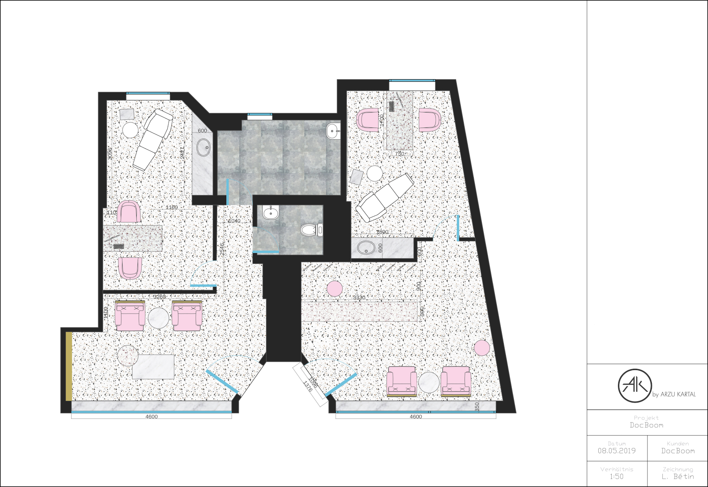I created two waiting rooms so that both treatment rooms will have their own waiting areas. This way, people can see the same design from the outside through the two front windows and understand that it is the same business. Some signage can be placed on the wall between the two doors to explain where the reception desk and the different treatment rooms are. I also designed some bespoke furniture (counter, preparation tables for the doctors, mirrors, coat rack, shelving) with the same materials and colors.
The project wasn’t approved despite the fact that the clients loved it - why?
Despite the fact that the clients loved the design and that I tried to reduce the usage of brass and marble to the minimum, it was still too expensive for them. They also added a new request to have three treatment rooms instead of two. Finally, according to the two future doctors, it was too pink for them.
03. How did I iterate using this feedback?
I explored new ideas and created new layouts and renders. The ones that you will see below are the final ones. I had to find solutions to reduce the production costs, so I tried to use existing furniture as much as possible.
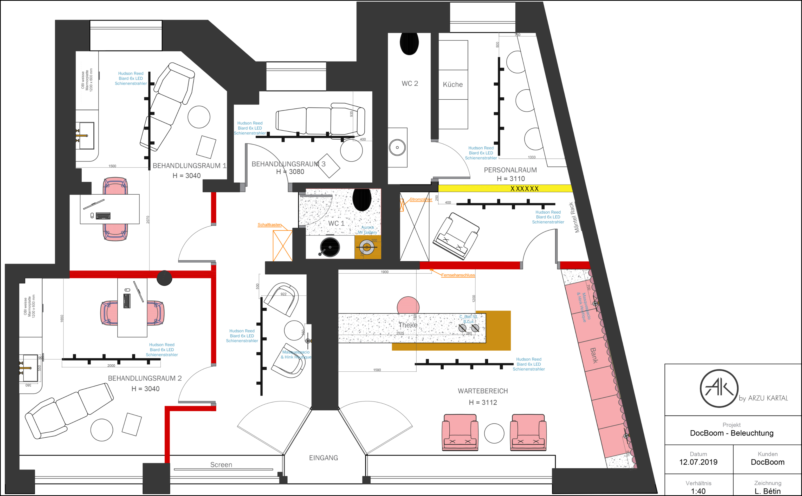Final plan with the furniture, bespoke furniture, lighting, materials, walls to build and to remove.
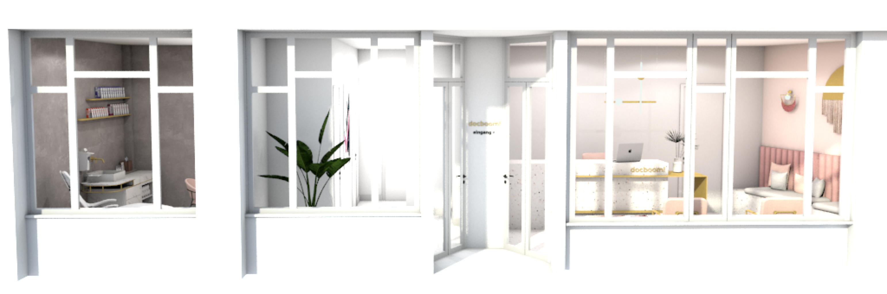Final plan with the furniture, bespoke furniture, lighting, materials, walls to build and to remove.
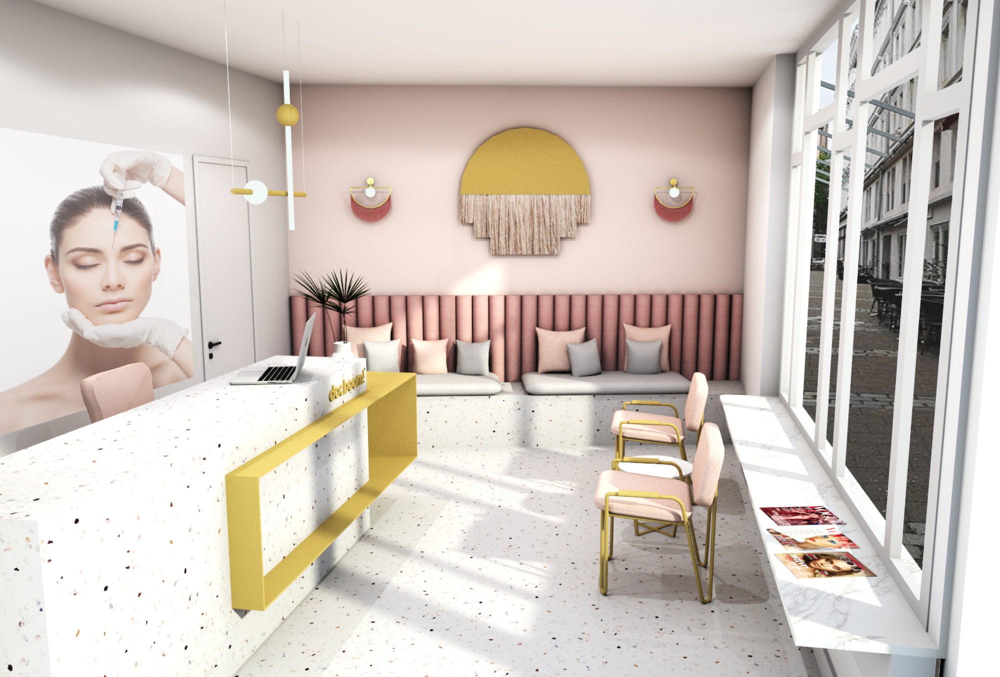 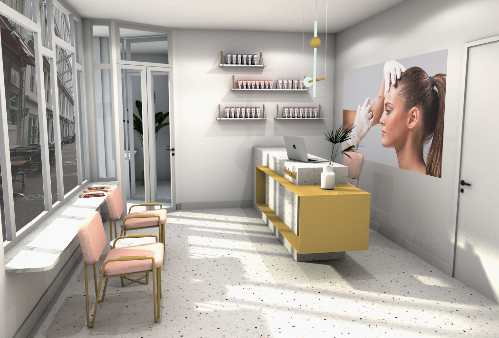 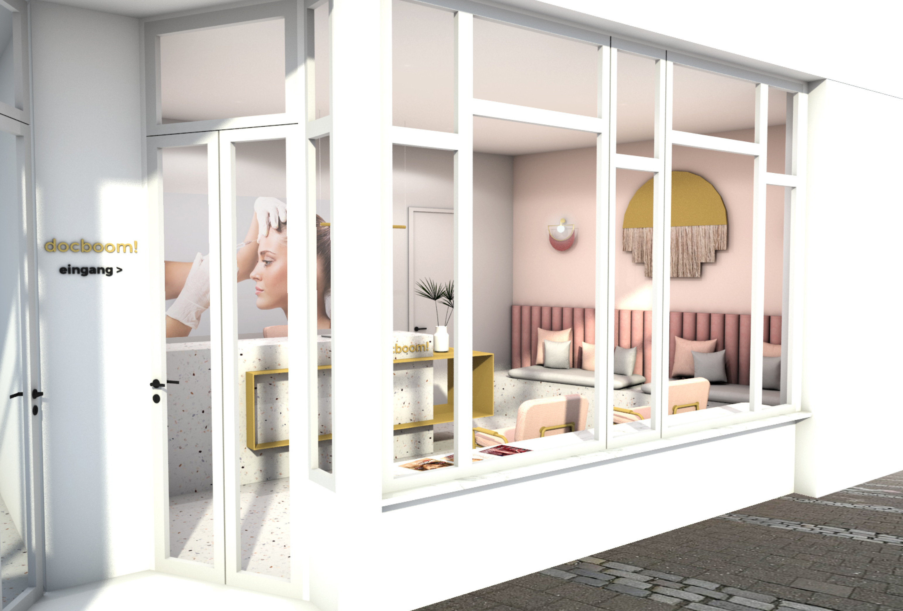Rendering of the waiting room.
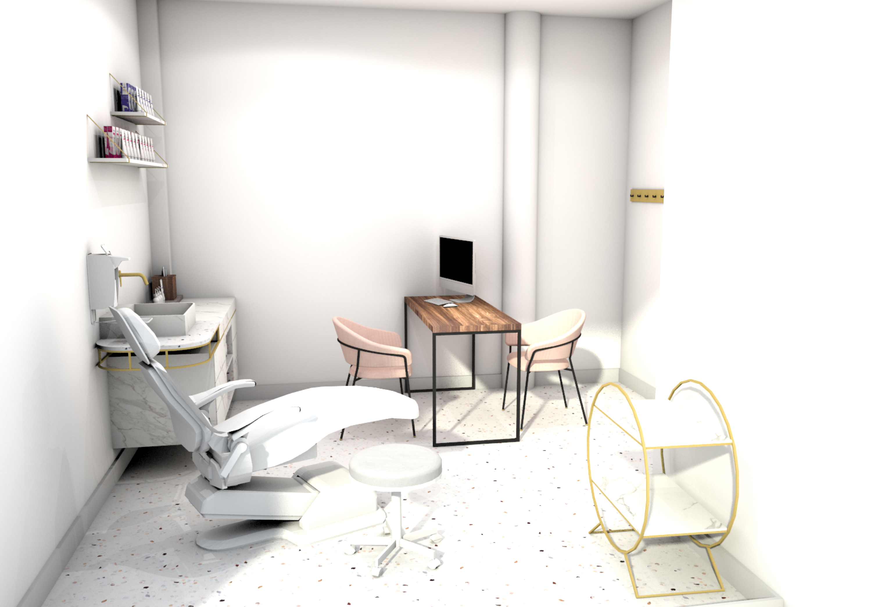 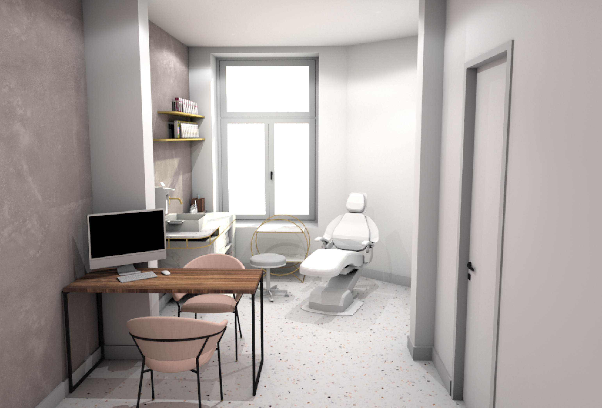Rendering of the waiting room.
Rendering of the restroom..
04. What are technical drawing details for?
The technical drawing details are used by the carpenter to renovate the space. These drawings have all the measurements, material types, colors, details on how everything is made, how everything stands and how to implement the different objects into the space.
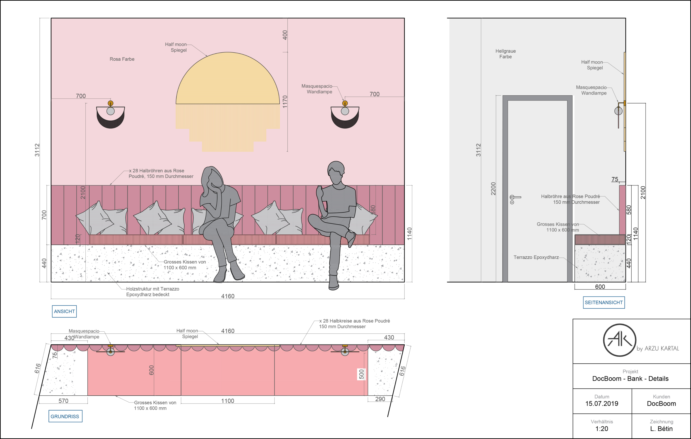 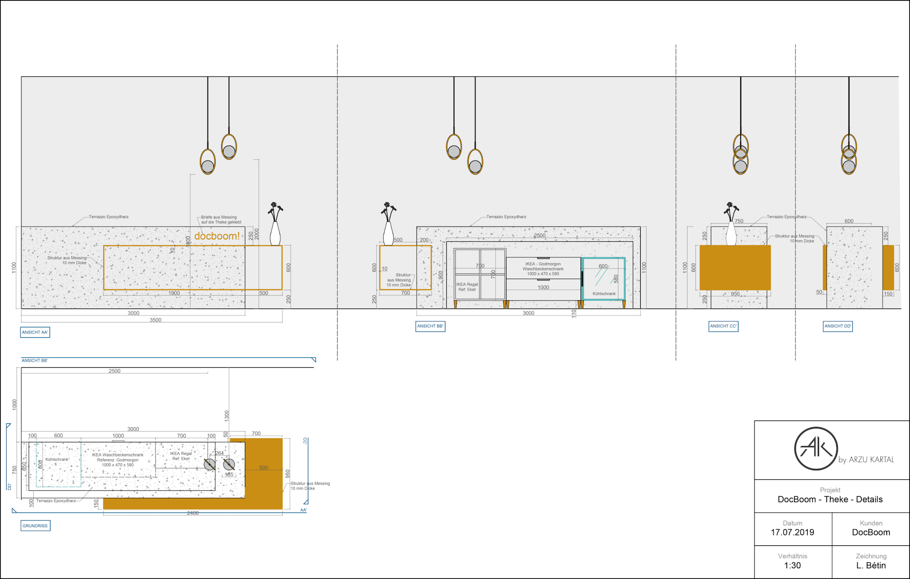 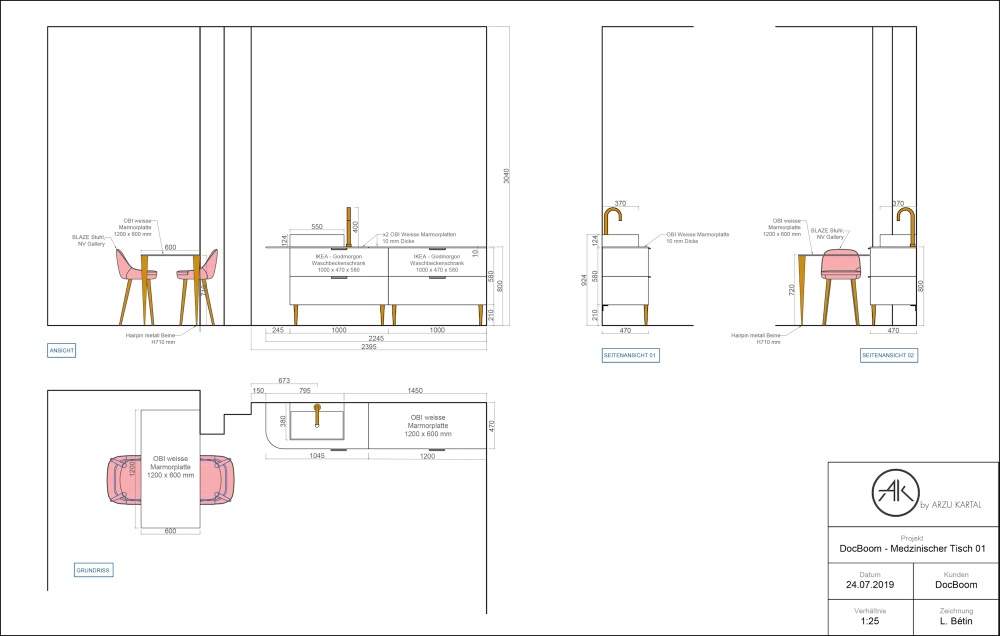 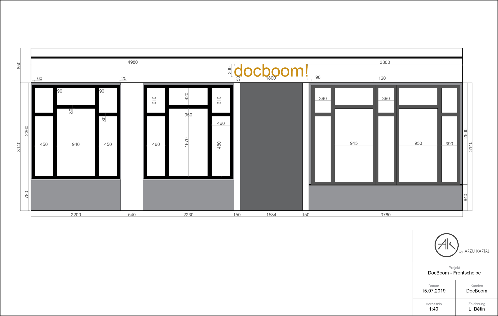What were the main challenges of this part?
The clients were still very onto reduce the costs and it went the same way for the production part. I had to find solutions to create technical drawing details of the furniture that will look like how I designed them. I looked for some basics furniture on IKEA, brass feet on Etsy and create a module easy to build for the worker. I had to search for cheaper materials as well.
05. How did I set up the inventory for elements needed in the project?
I used a management tool called “bill of quantities”, which I had learned during my previous internship at DAAA Haus in Malta. It is essentially a sheet where all the elements are listed, making it easier to know if something is missing, to take stock of the costs, and to keep track of the online order and delivery. This bill of quantities is linked to a design booklet with inventory pictures, names and brands of all these elements. If it is bespoke furniture, the name of the associated drawing is written next to it.

One part of the bill of quantities (BOQ) of Doc Boom.
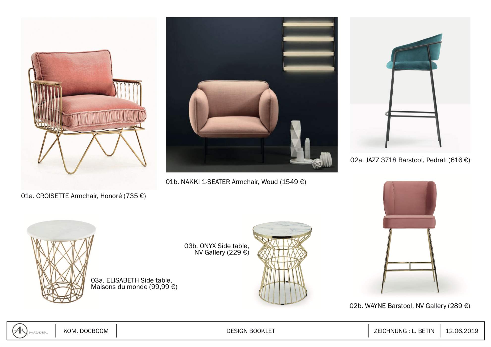First page of the design booklet.
Finalizing of the project
The furniture production and construction site took around 3 months.
- I visited the construction site several times with Arzu to make sure everything was progressing smoothly.
- We also checked together whether the colors that we picked before worked with the true natural light of the space.
Waiting room.
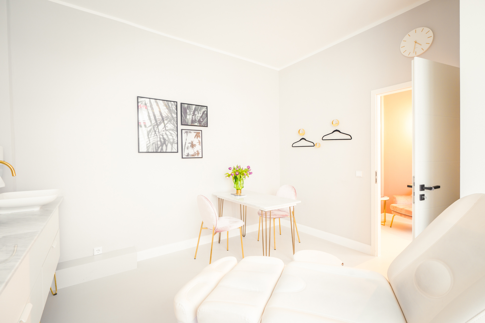 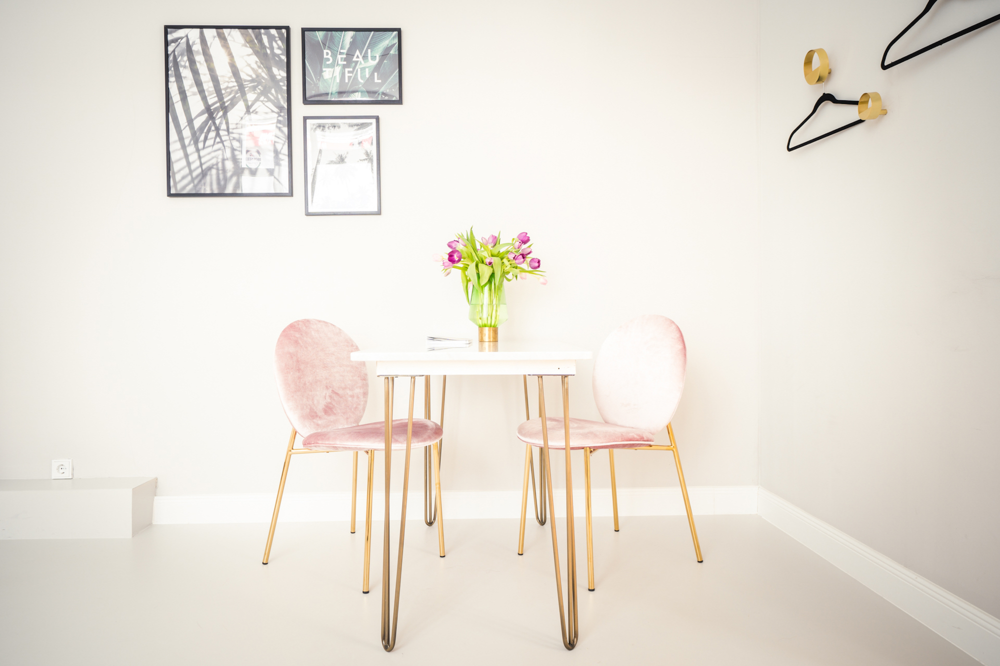 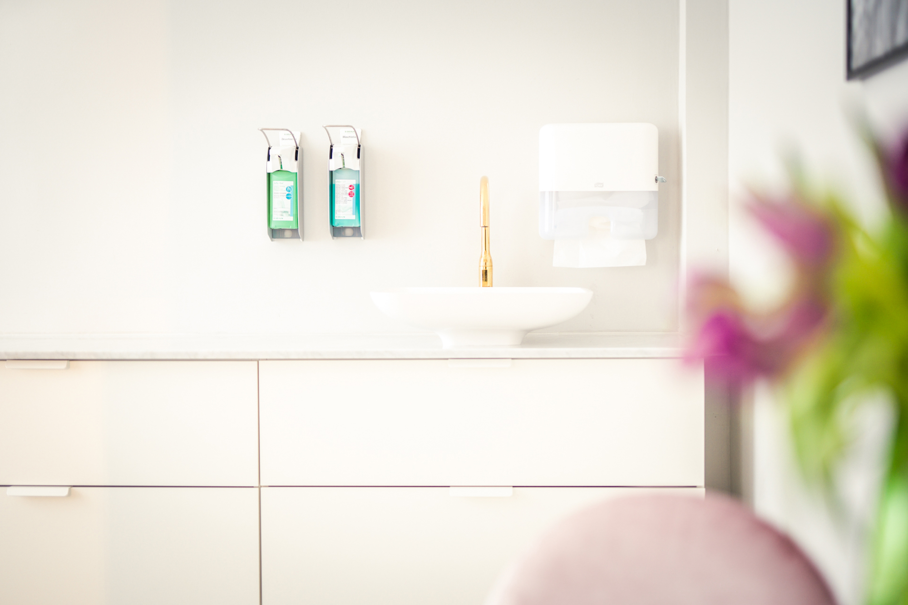Treatment room of the left side.